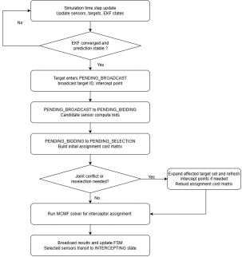
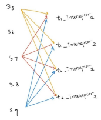
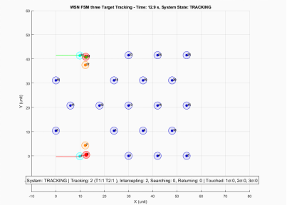
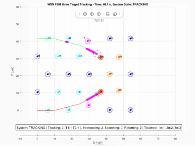
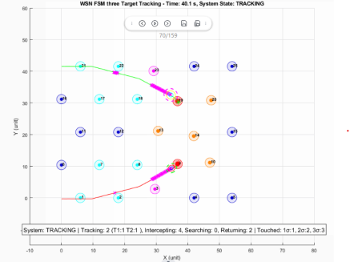
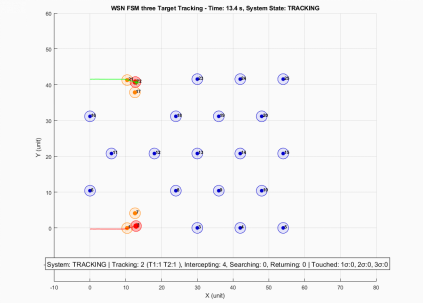

Global Interceptor Assignment for Cooperative Multi-Target Tracking in Mobile WSNs
Yeqi Sang
MIE8888 Final Report
Abstract
This report studies interceptor assignment in a mobile wireless sensor network (WSN) used for cooperative multi-target tracking. In the original simulation (V45), conflict resolution was based on a MinMax objective that attempts to minimize the worst team cost among the requested targets. This objective protects the weakest target assignment, but it does not directly optimize the total resource burden imposed on the sensor network. In the DES, interceptor assignment proceeds through three event steps: broadcast, bidding, and selection. Because different targets may enter this process at different times, a new request may compete with interceptors already committed to another target. When this happens, an interceptor assignment conflict occurs.
The proposed (V46) assignment reformulates the problem as a global assignment problem. In V45, this conflict-handling logic is only enforced within the current assignment procedure. V46 extends the same conflict management to later requests that compete for interceptors already committed to another target by regrouping the affected targets into one joint reassignment.
The report compares the global assignment method and the minimax method using the same candidate sensors and the same cost matrices. A natural simulation conflict is used as the primary worked example. In that event, the global assignment method selects the optimal interceptors and reduces the total assignment cost compared to the minimax method. In addition, when conflicts occur, the proposed method performs a joint reassignment across affected targets, preventing a later target from taking over interceptors already committed to an earlier target, and reassigning sensors if necessary so that the earlier target is not left with fewer interceptors than the joint solution allows. These results demonstrate that the proposed method improves global assignment quality by minimizing total cost, while preventing conflict-induced reductions in the number of assigned interceptors that could increase the risk of target loss, thereby enhancing overall system stability.
1. Introduction
Mobile wireless sensor networks are useful for cooperative multi-target tracking because mobile sensors can reposition themselves as targets move through the sensing field. In this project, the WSN tracks up to three moving targets, and each target is intended to maintain at most two active trackers to preserve tracking continuity during handover.
The central problem addressed in this report is interceptor assignment during proactive handover. When an active tracker predicts that it will lose a target, idle or non-tracking sensors are dispatched toward a predicted interception point before the target is lost. In the DES, this interceptor assignment process consists of broadcast, bidding, and selection; therefore, the system has the states PENDING_BROADCAST, PENDING_BIDDING, and PENDING_SELECTION. Because different targets may enter this process at different times, one target may start a new request while another target's selected interceptors are already executing an interception task. If those requests compete for the same sensors, independent target-by-target bidding can create conflicts, duplicate assignments, or unnecessary reassignment of sensors. Moreover, due to limited sensor availability and feasibility constraints, some targets may receive fewer than the desired maximum number of interceptors.
The original conflict-resolution method used a minimax objective. When affected targets compete for the same candidate sensors, the minimax method attempted to select teams such that the worst target team cost was minimized. This is a fairness-oriented objective: no target should receive a very poor team if a more balanced solution is available. However, in the DES, conflict is not limited to requests handled within the same assignment procedure. A conflict also occurs when a new request competes with interceptors already committed to another target. In V45, the conflict-handling logic is only enforced within the current assignment procedure, so a later request may still select interceptors that have already been committed to another target. In V46, the interceptor assignment problem is formulated as a global optimization problem and solved with a joint reassignment mechanism. The method applies the same conflict condition to committed interceptors, groups the affected targets into one assignment problem, first maximizes the number of fulfilled interceptor requests across all affected targets, and then minimizes the total assignment cost. This replaces the fairness-oriented MinMax objective with a joint assignment objective defined over all affected targets.
· It reformulates interceptor selection as a global assignment problem between candidate sensors and target interceptor assignment.
· It compares the global assignment method and MinMax assignment using the same candidate sensors and cost matrices.
· It uses natural simulation evidence to show how the two objectives can make different decisions.
· It analyzes feasibility and communication limitations for Crazyfile 2.0 deployment.
2. Related Work
Multi-target tracking in wireless sensor networks (WSNs) has evolved from reactive detection-based strategies to predictive and coordinated frameworks. Early approaches primarily relied on passive tracking, where sensors detect targets within range and reacquire them after loss through opportunistic encounters. While simple, such methods often suffer from frequent tracking interruptions, especially in scenarios with high target velocity or sparse sensor coverage.
To address these limitations, predictive tracking frameworks have been developed to anticipate tracking loss and enable proactive coordination. The DES-based coordination framework proposed in [1] integrates Extended Kalman Filter (EKF) based loss prediction, guidance-based sensor repositioning, and distributed multi-objective bidding for sensor allocation. In this framework, sensors operate using a finite-state-machine architecture and transition between tracking and repositioning roles, enabling proactive handover before target loss occurs.
Task allocation in multi-robot and sensor networks has also been widely studied. Distributed auction-based mechanisms are commonly used due to their scalability and robustness under communication constraints. These approaches typically assign tasks based on local cost evaluations but may lead to suboptimal global allocations when multiple agents compete for shared resources. Conflict resolution mechanisms, including min-max optimization and consensus-based strategies, have been proposed to ensure fairness and prevent resource contention.
In the DES framework of [1], conflict resolution is handled using a min-max objective when multiple targets simultaneously request auxiliary sensors. This formulation prioritizes fairness by minimizing the worst-case team cost across targets. However, the approach mainly treats conflict as an event handled within one assignment procedure and does not explicitly describe the more general DES condition in which a new request competes with interceptors already committed to another target.
This report builds upon that framework and focuses specifically on interceptor assignment conflict in the DES. It introduces a global assignment formulation that groups affected targets into one joint reassignment problem whenever they compete for the same candidate sensors. Unlike the original min-max method, which balances the worst-case cost, the proposed approach minimizes total assignment cost while ensuring feasibility constraints, providing an alternative objective for system-level resource allocation.
3. System Model and Problem Formulation
3.1 System Model and Assumptions
This section models the interceptor assignment problem. Consider a WSN with N mobile sensors that cooperatively track up to K targets. Each target can be assigned up to two active tracking sensors, and up to  interceptor sensors when a potential loss is predicted.
interceptor sensors when a potential loss is predicted.
Each sensor,, has a home position, and a current position . Each target, k = , has state , where is target position and is the target velocity. Sensors possess identical capabilities: detection radius , maximum velocity and communication range .
Target detection occurs when . Upon detection, sensor  obtains a noisy position measure of target , where is zero-mean measurement noise with covariance . Throughout the report, calling targets are targets that have reached PENDING_SELECTION and are requesting new interceptors. Candidate sensors are eligible sensors to bid for those targets. Active trackers are the sensors currently assigned to track a target and are excluded from interceptor bidding. A predicted interception point is the point to which a selected interceptor is dispatched, and an interceptor assignment is the event-level pairing between a candidate sensor and a calling target.
obtains a noisy position measure of target , where is zero-mean measurement noise with covariance . Throughout the report, calling targets are targets that have reached PENDING_SELECTION and are requesting new interceptors. Candidate sensors are eligible sensors to bid for those targets. Active trackers are the sensors currently assigned to track a target and are excluded from interceptor bidding. A predicted interception point is the point to which a selected interceptor is dispatched, and an interceptor assignment is the event-level pairing between a candidate sensor and a calling target.
The system assumptions used in the remainder of the report are as follows: the workspace is planar; sensors are homogeneous; assignment is event-triggered when a target enters the interceptor assignment process; and active trackers are excluded from candidate bidding during the current event. Each interceptor assignment event follows three steps: broadcast, bidding, and selection, corresponding to the states PENDING_BROADCAST, PENDING_BIDDING, and PENDING_SELECTION. Since different targets may enter this process at different times, a new request may compete with interceptors already committed to another target. If the requests share one or more candidate sensors, the system treats this as one interceptor assignment conflict and resolves it through a joint global assignment over the affected targets.
3.2 Problem Formulation and Bidding Cost Function
When one or more targets enter PENDING_SELECTION, the system defines a set of calling targets and a set of candidate sensors. For each calling target, the system first predicts an interception point based on the current EKF target estimate and the predicted tracker-loss point. Then for each available candidate sensor, the system calculates a bidding cost to that target. The cost represents how suitable the sensor is for that target. A lower cost means the sensor is a better candidate. In this report, each target can be assigned at most interceptors and is therefore modeled as having  interceptor slots to be filled.
interceptor slots to be filled.
Let represents if sensor is assigned to target k, then we can have:
The bidding cost is:
· penalizes the displacement of a sensor from its home location.
· penalizes the distance from the sensor to the target intercept point.
· penalizes poor arrival timing relative to the target motion.
· penalizes low shared confidence in the target estimate.
The generalized interceptor assignment problem is defined in two steps. First, it maximizes the total number of interceptor slots filled:
Then, among all assignments that achieve this maximum value, it minimizes the total assignment cost:
Subject to
The first constraint ensures that each candidate sensor can be assigned to at most one target in the current event. The second constraint ensures that each calling target receives at most interceptor assignments.
4. Methodology
4.1 Assignment Workflow and Conflict Management
The interceptor assignment procedure is triggered when a tracker predicts that a target may be lost. The target then enters the interceptor assignment process and passes through the states PENDING_BROADCAST, PENDING_BIDDING, and PENDING_SELECTION while requesting new interceptors.
In the DES, interceptor assignment follows three event steps: broadcast, bidding, and selection. Different targets may enter this process at different times. Therefore, a conflict occurs whenever a new interceptor request competes for one or more sensors that are already committed to another target. In V45, this conflict-handling logic is only enforced within the current assignment procedure. In V46, the same conflict management is also applied when a later request competes for interceptors that have already been committed.
For each calling target, the system predicts an interception point based on the current target estimate, constructs the set of available candidate sensors, and evaluates a bidding cost for each sensor–target pair.

Figure1: Interceptor Assignment Workflow and Conflict Management
When such a conflict is detected, the affected targets are grouped into one joint reassignment event. The assignment is then solved once across all affected targets, and the resulting interceptor assignments are broadcast to the WSN.
4.2 Global Assignment for Interceptor Selection
The joint assignment problem introduced in Section 4.1 involves assigning candidate sensors to interceptor slots of multiple targets under capacity constraints. In this report, the global assignment method enforces that each sensor is used at most once while assigning sensors to targets in a way that minimizes the total assignment cost defined in Section 3.2.
Table 1 shows an example with two targets, T1 and T2, and five available candidate sensors: S5, S6, S7, S8, and S9.
Candidate Sensor | Bidding cost for Target 1 | Bidding Cost for Target 2 |
S5 | 0.219 | 0.193 |
S6 | 0.285 | 0.377 |
S7 | 0.306 | 0.304 |
S8 | 0.362 | 0.306 |
S9 | 0.377 | 0.300 |
Table 1: cost matrix for Section 2.1 example
In this example, each target requires two interceptor sensors. Therefore, the system must make four assignments in total: two sensors for T1 and two sensors for T2. These four required interceptor slots can be described as T1 Interceptor 1, T1 Interceptor 2, T2 Interceptor 1, and T2 Interceptor 2.
Each candidate sensor can be selected at most once. Therefore, the algorithm cannot simply choose the two lowest-cost sensors for each target independently, because the same sensor may be selected by more than one target based on the bidding result. Instead, the algorithm evaluates the combined assignment for all requesting targets and selects a non-overlapping set of sensors with the lowest global total bidding cost. Figure 2 illustrates the sensor-target assignment structure for interceptor selection.

Figure 2. Sensor-target assignment structure for interceptor selection
In this example, S5 has the lowest bidding cost for both T1 and T2. If t1 selects first, it may choose S5 and S6, because these are the two lowest-cost candidates for T1. Then T2 must select from the remaining sensors, such as S7 and S9. This target-by-target assignment gives:
T1: S5 and S6, cost = 0.219 + 0.285 = 0.504
T2: S7 and S9, cost = 0.300 + 0.304 = 0.604
Total cost = 1.108
However, this is not the best global assignment. The global assignment method compares the total cost across both targets and selects a non-overlapping assignment with the lowest combined cost. In this case, it assigns S6 and S7 to T1, and S5 and S9 to T2:
T1: S6 and S7, cost = 0.285 + 0.306 = 0.591
T2: S5 and S9, cost = 0.193 + 0.300 = 0.493
Total cost = 1.084
Therefore, the global assignment reduces the total cost from 1.108 to 1.084 while ensuring that each sensor is assigned to only one target.
4.3 Objective Trade-off: MinMax v.s. Global Assignment
The MinMax and global assignment approaches differ fundamentally in their optimization objectives. The MinMax method minimizes the worst-case target cost, leading to a fairness-oriented assignment that prevents any target from receiving a significantly inferior interceptor configuration. This objective is particularly beneficial when balanced tracking performance across all targets is critical.
In contrast, the global assignment formulation minimizes the total assignment cost across all targets under capacity constraints. This results in a globally optimal allocation in terms of overall system efficiency, but it does not explicitly enforce fairness among targets. Consequently, the two methods may produce different assignments under the same cost matrix: MinMax may sacrifice global efficiency to improve the worst-case target, while the global assignment method may accept uneven target costs if doing so reduces the total system cost.
The two objectives reflect different system priorities. MinMax remains a meaningful fairness-oriented baseline because it explicitly protects the worst-case target. However, in this work, the global assignment method is adopted as the primary assignment method because the goal is to resolve interceptor assignment conflicts through a joint assignment that minimizes total system cost while enforcing non-overlapping sensor use.
4.4 Feasibility and Deployment Considerations
4.4.1 Feasibility as a distributed system
The interceptor assignment process is implemented as an event-driven coordination procedure within the discrete-event system (DES) framework. In the nominal case, the coordinator is selected as the active tracker of the calling target, since it maintains the most accurate and up-to-date target state estimate. When a conflict joins multiple affected targets, the coordination responsibility is transferred to one of the active trackers within the affected target group. This assumption is reasonable because such conflicts typically arise when targets are spatially close, implying that the involved sensors remain within communication range. If a target no longer has an active tracker, the coordination role is inherited by the tracker of a conflicting target. At each interceptor assignment event, a temporary coordinator is dynamically established to collect bid information from candidate sensors and compute the assignment.
Each interceptor assignment event follows three steps: (1) the coordinator broadcasts an assignment request, (2) candidate sensors compute and send their local bid values, and (3) the coordinator computes the global assignment and broadcasts the result. This results in a communication cost of O(M), where M is the number of candidate sensors.
When a new request competes for interceptors already committed to another target, one additional joint reassignment round is required. After the conflict is identified, the affected targets are grouped together, the interception points of previously assigned targets are updated based on the elapsed time since their original assignment, and a joint assignment request is broadcast. Candidate sensors then recompute bids for all affected targets and send updated bid values to the coordinator. The coordinator reconstructs the cost matrix, solves the joint global assignment, and broadcasts the final non-overlapping allocation. In the current MATLAB simulation, these steps are executed immediately after the conflict is detected. Under the DES interpretation, this rebidding and reselection sequence is part of normal event handling and does not have to be completed within a single update cycle as long as the overall system remains operational.
4.4.2 Computational Complexity of Global Assignment and Reassignment
The global assignment method then selects up to K interceptor sensors per target while ensuring that each candidate sensor is assigned at most once. Therefore, the number of assigned sensors is at most The current implementation has the worst-case runtime:
In this simulation, M <= 25, N <= 3, and K = 2. Therefore, the largest case is bounded by:
The cost table is also small, with at most bidding costs. Therefore, the assignment problem is bounded for the current simulation. For larger systems, it can remain practical by limiting the candidate sensor set and keeping the number of required interceptors per target small.
4.4.3 Embedded Deployment Considerations (Crazyflie 2.0)
While the complexity analysis in Section 4.4.2 shows that the global assignment method remains bounded and small for the current system size, asymptotic tractability alone does not determine whether the method is deployable on resource-constrained hardware. To connect the algorithmic result to a practical embedded setting, this section considers Crazyflie 2.0, a small open-source quadrotor platform with a 168 MHz STM32F405 main MCU and a separate nRF51822 radio/power MCU, as a representative lower-end reference for deployment feasibility.
Using the workstation measurement as an optimistic computation-only baseline, the global assignment computation time of 0.001254 s on a 4.5 GHz CPU corresponds to about 5.64 x 10^6 processor cycles. Under ideal frequency-only scaling, the same cycle count would require about 0.0336 s on the 168 MHz STM32F405, or 33.6% of a 0.1 s simulation time step. This estimate should be interpreted only as a lower-bound computation estimate, since embedded execution differs substantially from workstation MATLAB in architecture, memory hierarchy, compiler behavior, floating-point efficiency, and concurrent control workload.
More importantly, the sensor-to-sensor response budget must include both computation and communication. In a normal assignment event, the coordinator broadcasts the request, collects bids, runs the solver, and broadcasts the result. In a conflict-management event, the system may need a second round of bid collection after updating the interception point, even though it still performs only one final joint global assignment computation. In a deployment-oriented DES interpretation, this reselection process need not be completed within a single update cycle, but its communication overhead still affects the overall event response time. Therefore, the extra cost of reassignment is mainly additional communication. Since even small wireless exchanges can take milliseconds, communication may consume a noticeable part of the overall response time. Hence, although the bounded problem size makes the global assignment method computationally plausible, real embedded feasibility must be confirmed with end-to-end timing on the target platform.
5. Simulated Experiments
5.1 Experimental Setup
The experiments are conducted using the simulation framework developed in [1]. The same discrete-event-system (DES) architecture, sensor models, and target motion configurations are adopted to ensure a fair comparison between the original MinMax-based assignment (V45) and the proposed global assignment-based method (V46). The only difference between the two versions lies in the interceptor assignment strategy.
The wireless sensor network consists of 25 mobile sensors arranged in a 5 × 5 hexagonal grid with inter-node spacing units. Sensors have a fixed detection range units, communication range units, which enables each sensor to coordinate with first and second-tier neighbors. The hexagonal geometry provides efficient coverage while maintaining structured communication patterns for distributed coordination.
The same EKF-based state estimation and bidding cost formulation are used in both methods. This ensures that any differences in assignment results arise solely from the assignment strategy (MinMax vs. global assignment) and the joint reassignment mechanism for resolving interceptor assignment conflicts, rather than differences in modeling assumptions.
All simulations are conducted under the same DES-based control architecture, with identical state-transition logic, sensor behaviors, and computational procedures in both methods.
5.2 Natural Conflict Scenario
Figure 5 shows a full simulation from V45, using the original min-max conflict resolution strategy to resolve the conflict. In V45, the conflict-handling logic is only enforced within the current assignment procedure, so a later request may still select interceptors that have already been committed to another target.

Figure5: Full simulation from V45
After observing the simulation more closely, an additional conflict case is identified. At t=38.9, Target 1 selected Sensor 10 and Sensor 14 as its interceptors. Sensor 14 was assigned to move toward the predicted interception point for Target 1. However, at t=39.5, Target 2 also entered the PENDING_SELECTION state. During this later selection process, Target 2 selected Sensor 20 and took Sensor 14 away from Target 1, even though Sensor 14 was already executing an interception task for Target 1. This behavior is shown in Figure 6.

Figure6: t=40.1 for V45 simulation. Target 2 took over sensor 14 from Target 1.
This is an important observation because the system operates as a discrete-event system. Although the two requests were not handled within the same assignment procedure, the later selection by Target 2 still created a conflict with the existing interceptor assignment of Target 1. This is the normal interceptor assignment conflict condition in the DES. As a result, Target 1 loses one of its interceptors, which potentially increases its risk of target loss. Therefore, this case should be treated as a conflict event.
To address this issue, a new conflict-management mechanism is introduced in example_V46_Yeqi.m (V46). In V46, when a target attempts to select an interceptor that is already assigned to another target, the system treats the affected requests as one interceptor assignment conflict. Compared with V45, the same conflict handling is now also applied when a later request competes for interceptors that have already been committed to another target. Instead of allowing the new target to simply take the sensor away, the affected targets are grouped together, and a new round of selection is performed across all of them. The reassignment does not strictly protect the original assignment; instead, it evaluates whether reassigning the sensor leads to a better global solution. In this situation, the global assignment formulation arises naturally: the conflicting targets and their candidate interceptors form a shared assignment problem. By solving this problem in a global scope, the system can determine the minimum-cost combination of interception assignments for both targets, rather than optimizing each target independently. If a sensor is reassigned, the original target is simultaneously reassigned alternative interceptors within the same reassignment step. This allows the final interceptor allocation to be globally optimal across the affected group of targets.
Furthermore, when an existing assignment is disrupted, the original target’s interception point may no longer be optimal. Therefore, for Target 1 in this case, the interception point must be recalculated before performing the updated selection. This allows the reassignment process to use the latest target prediction and improves the likelihood of successful interception.

Figure7: t=40.1 for V46 simulation. Target 2 now employes sensor 13 and sensor 20, instead of taking over sensor 14 from Target 1
Figure 7 shows the result after applying the V46 fix. At t = 39.5 s, Target 2 no longer takes Sensor 14 away from Target 1. Instead, the updated joint global selection assigns Sensor 13 and Sensor 20 to Target 2, while Target 1 retains its assigned interceptors. This confirms that the revised conflict-management logic prevents an active interception assignment from being overwritten by a later target selection.
5.3 MinMax V.S. Global Assignment
This section compares the assignment results produced by MinMax and the global assignment method under the same conflict scenario. The goal is not to evaluate which method is better, but to illustrate how different optimization objectives lead to different assignment outcomes.

Figure8: Full simulation from V46
Figure 8 shows the full simulation result from V46 after introducing the updated conflict-management mechanism. At t = 39.5 s, Target 1 and Target 2 trigger an assignment conflict, causing the system to perform a joint reassignment process to find a better global interceptor allocation.
Method | Target | Selected Sensors | Individual Costs | Target Total Cost | Total Cost |
MinMax | Target 1 | S14, S18 | 0.193, 0.397 | 0.590 | 1.181 |
MinMax | Target 2 | S13, S20 | 0.306, 0.285 | 0.591 | |
Global Assignment | Target 1 | S10, S14 | 0.300, 0.193 | 0.493 | 1.084 |
Global Assignment | Target 2 | S13, S20 | 0.306, 0.285 | 0.591 |
Table 4: Interceptor Assignment Comparison Between MinMax and Global Assignment
Table 4 summarizes the interceptor assignment results produced by MinMax and the global assignment method for the conflict event at t = 39.5. Overall, the global assignment method reduces the total assignment cost from 1.181 to 1.084. The difference arises from the distinct optimization objectives. MinMax prioritizes balancing the worst-case target cost, while the global assignment method minimizes the total assignment cost across all targets. As a result, the two methods select different sensor combinations under the same scenario.
6. Conclusion and Future Work
This report reformulates interceptor assignment in cooperative multi-target tracking as a global assignment problem with joint conflict management. Compared with the MinMax method, the proposed approach provides one consistent way to resolve interceptor assignment conflicts in the DES while improving global assignment efficiency. The current results suggest that the method is computationally practical for the bounded WSN scale studied here, although embedded deployment feasibility still requires communication-aware validation on target hardware.
7. References
[1] N. Najafizadeh Sari, Y. Sang, G. Nejat, and B. Benhabib, “Reconfigurable Wireless Sensor Network Coordination for Simultaneous Multi-Target Tracking”